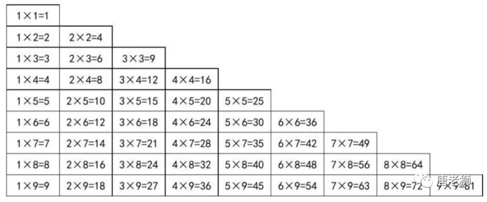
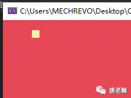
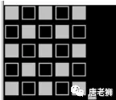
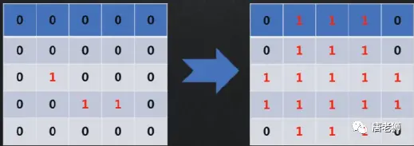
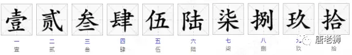

C#入门
https://www.bilibili.com/opus/649221630301569025?spm_id_from=333.1387.0.0
- 1.6个杯子排成一排，右边3杯有水，左边3杯没有水。只移动一个杯子，让有水的和没水的杯子完全间隔，该怎么移动？
- 2.一个粗细均匀的长直管子,两端开口,里面有4个白球4个黑球,球的直径、两端开口的直径等于管子的内径,现在白球和黑球的排列是wwwwbbbb,要求不取出任何一个球,使得排列变为bbwwwwbb，应该如何操作？
- 3.怎样种四棵树使得任意两棵树的距离相等？
- 4.有两根不均匀分布的香，香烧完的时间是一个小时，你能用什么方法来确定一段15分钟的时间？
- 5.请简单描述 Console.Write("")和Console.WriteLine("")的区别，简单描述Console.ReadKey()和Console.ReadLine()的区别。
- 6.在控制台上请用户输入用户名、年龄、班级
- 7.在控制台上问用户喜欢什么运动，不管用户输入什么，你都回答：“哈哈，好巧，我也喜欢这个运动”
- 8.在控制台上输出如下10*10的空心星型方阵
- *
- **
- *
-  +
- 13.请默写出常用的14个变量类型，以及他们所占用的内存空间。
- 14.请将2进制11000111、001101、01010101转为10进制，写出计算过程
- 15.请将10进制99、1024、78937转为2进制，写出计算过程
- 16.下面的变量名哪些是错误的？U3d No.1 3day$money discount_ 1 Shang Haiclass int _a_b_c_Main _ 2C print
- 17.按照驼峰命名法命名以下变量（使用英文）我的年龄、我的性别、我的攻击力、我的防御力、你的身高、你的体重
- 18.常量有什么特点？
- 19.请简述你觉得在游戏开发中常量会用来干什么？
- 20.请写出至少5种转义字符
- 21.请用至少两种方式在控制台打印出：我是小明我今年18我的爱好是制作游戏我要好好学习，天天向上
- 22.什么情况下会出现数据类型的隐式转换，请举例说明
- 23.请将自己名字的每一个字符转换成数字并打印出来
- 24.显示类型转换有几种方式？他们分别是什么，请举例说明？
- 25.请将24069转成字符，并打印
- 26.提示用户输入姓名、语文、数学、英语成绩，并将输入的3门成绩用整形变量存储
- 27.请用户输入一个数字如果输入有误，则提示用户输入错误
- 28.提示用户输入姓名、语文、数学、英语成绩如果输入的成绩有误，则提示用户输入错误否则将输入的字符串转为整型变量存储
- 29.定义一个变量存储你的年龄，十年后你的年龄是多少？请输出到控制台
- 30.计算一个半径为5的圆的面积和周长面积公式：πr²周长公式：2πr
- 31.计算任意三门成绩的总分、平均分打印到控制台。三门成绩均为整数类型（C# Unity Math）
- 32.商店T恤的价格为285元/件，裤子的价格为720元/条，小李在该店买了2件T恤和3条裤子，请计算小李该付多少钱？打3.8折后呢？
- 33.int a = 10, b = 20;int number1 = ++a + b;a = 10;b = 20;int number2 = a + b++;a = 10;b = 20;int number3 = a++ + ++b + a++;请说明 number1和number2和number3的结果
- 34.有两个数a=99，b=87，请写出两种方法交换他们的值，让a = 87，b=99
- 35.请把987652秒通过代码转为n天n小时n分钟n秒显示在控制台中
- 36.定义一个变量存储客户的姓名，然后在屏幕上显示：“你好，XXX”XXX代表客户的姓名
- 37.定义两个变量，一个存储客户的姓名，另一个存储年龄，然后在屏幕上显示：“xxx + yyy岁了”。xxx代表客户的姓名，yyy代表年龄举例（唐老狮18岁了）
- 38.当我们去面试时，前台会要求我们填一张表格，有姓名，年龄，邮箱，家庭住址，期望工资，请把这些信息在控制台输出。
- 39.请用户输入用户名、年龄、班级，最后一起用占位符形式打印出来
- 40.请口答下列表达式的结果我的年龄（18） > 你们的年龄（22）兔子的速度（3m/s） < 乌龟的速度 (0.3m/s)狗的重量( 50kg ) < 兔子的重量( 5kg )我身上的Money( 10元 ) == 你身上也有Money( 10元 )
- 41.求打印结果是什么？bool b = true;Console.WriteLine( b != true );Console.WriteLine(10==10);Console.WriteLine(10>20);Console.WriteLine(10<=20);Console.WriteLine(10<=10);
- 42.bool gameOver, startGame;int a = 10, b = 15;gameOver = a > (b - 5);startGame = gameOver == (b > (a + 5));Console.WriteLine("startGame = " + startGame);请问打印结果是什么？
- 43.求打印结果是什么？Console.WriteLine(true || true);Console.WriteLine(false || true);Console.WriteLine(true && true);Console.WriteLine(true && false);Console.WriteLine(!true);
- 44.求打印结果是什么？bool gameOver;bool isWin;int health = 100;gameOver = true;isWin = false;Console.Write(gameOver || isWin && health > 0);
- 45.35 << 4 和 66 >> 1 的结果为？
- 46.99 ^ 33 和 76 | 85 的结果为？
- 47.比较两个数的大小，求出最大的。
- 48.提示用户输入一个姓名，然后再控制台输出姓名，只要输入的不是帅哥，就显示美女。
- 49.依次输入学生的姓名，C#语言的成绩，Unity的成绩，两门成绩都大于等于90分，才能毕业，请输出最后的结果。
- 50.要求用户输入一个年份，然后判断是不是闰年？闰年判断条件：年份能被400整除（2000）或者年份能被4整除，但是不能被100整除（2008）
- 51.请用户输入今日看唐老狮视频花了多少分钟，如果大于60分钟，那么在控制台输出“今天看视频花了XX分钟，看来你离成功又进了一步!”
- 52.请输入你的 语文，数学，英语成绩，满足以下任意条件，则输出“非常棒，继续加油”语文成绩大于70 并且 数学成绩大于80 并且英语成绩大于90语文成绩等于100或者数学成绩等于100或者英语成绩等于100语文成绩大于90 并且 其它两门中有一门成绩大于70
- 53.定义一个变量，存储小赵的考试成绩，如果小赵的考试成绩大于（含）90分，那么爸爸奖励100元钱，否则一个月不能玩游戏
- 54.要求用户输入两个数a、b，如果两个数可以整除或者这两个数加起来大于100，则输出a的值，否则输出b的值
- 55.输入一个整数，如果这个数是偶数，则打印“Your input is even”，否则打印“Your input is odd”
- 56.有3个整形变量，分别存储不同的值，编写代码输出其中最大的整数
- 57.写一个程序接受用户输入的字符，如果输入的字符是0~9数字中的一个，则显示“您输入了一个数字”，否则显示这不是一个数字
- 58.提示用户输入用户名，然后再提示输入密码，如果用户名是“admin”，并且密码是"8888"，则提示正确，否则，如果用户名不是admin还提示用户用户名不存在，如果用户名是admin则提示密码错误
- 59.提示用户输入年龄，如果大于等于18，则告知用户可以查看，如果小于13岁，则告知不允许查看，如果大于等于13并且小于18，则提示用户是否继续查看（yes、no），如果输入的是yes则提示用户请查看，否则提示“退出”。
- 60.请说明以下代码的打印结果（不要打一遍代码，请直接通过阅读说出结果）int a = 5;if( a > 3){int b = 0;++b;b += a;}Console.WriteLine(b);
- 61.唐老狮的工资是由基本工资+绩效决定的绩效说明：学生评价 很兴奋，则评定为A级，绩效工资500学生评价 很充实，则评定为B级，不加绩效工资学生评价 还好吧，则评定为C级，绩效工资扣300学生评价 难理解，则评定为D级，绩效工资扣500学生评价 枯燥泛味，则评定为E级，绩效工资扣800 假设唐老狮的工资是4000请用户输入王老师的评级，并算出王老师的工资是多少？
- 62.小唐带了10元钱去星巴克买咖啡，三种型号选择：1=(中杯，¥5)2=(大杯，¥7)3=(超大杯，¥11)请用户输入选择的型号，如果钱够，则购买成功，并算出小王最后还剩多少钱？如果钱不够，则提示用户“钱不够，请换其他型号”
- 63.输入学生的考试成绩，如果成绩>=90：A90 > 成绩 >= 80:B80 > 成绩 >= 70:C70 > 成绩 >= 60:D成绩 < 60:E（使用switch语法完成）最后输出学生的考试等级
- 
- 64.在控制台输入一个（0~9）的数并显示为大写。如输入2，则显示二
- 65.在控制台输出1到100
- 66.在控制台输出1到100之间所有整数的和
- 67.用while和continue实现计算1到100（包含）之间的除了能被7整除之外所有整数的和
- 68.提示用户输入一个数，判断该数是否是素数并打印。（素数/质数：只能被1和这个数字本身整除的数字，1不是质数，最小的质数是2）
- 69.要求输入用户名和密码（admin/8888），用户名或者密码错误，则提示“用户名或密码错误”，直到输入正确为止
- 70.输入班级人数，然后依次输入学员成绩（需提示当前是第几个学员），计算班级学员的平均成绩和总成绩。
- 71.定义一个整形变量sum，然后分别把1~100之间的数字依次累加到sum中，当sum的值大于500的时候，中断操作，并在控制台输出累加到第几个数字就可以使sum大于500
- 72.假设看唐老狮视频的同学有100人，每个月增长20%，请问按此速度增长，经历多少个月看唐老狮视频的同学能达到1000人？
- 73.求数列 1,1,2,3,5,8,13....的第20位数字是多少？
- 74.找出100内所有素数并打印。
- 75.要求用户输入用户名和密码，只要不是admin和8888就一直提示用户名或密码错误，请重新输入
- 76.不断提示请输入你的姓名，直到输入q结束
- 77.输出1到100之间的整数（包含本身）
- 78.求1~100之间所有偶数的和
- 79.找出100~999之间的水仙花数例如：153 = 111 + 555 + 333 这个数就是水仙花数
- 80.在控制台上输出九九乘法表

- 81.在控制台上输出如下1010的空心星型方阵 *****
- 82.在控制台上输出如下10*10的三角形方阵
*
**
***
****
*
***
****
*****
- 83.在控制台上输出如下10行的三角形方阵
*
***
*
***
*****
*
***
*
***
*****
- 84.通过W,A,S,D键在控制台中控制一个黄色方块上下左右移动注意：边界问题知识点：while，switch，输入输出等等

- 85.唐老狮打小怪兽唐老狮攻击力为8~12之间的一个值小怪兽防御为10，血量为20在控制台中通过打印信息表现唐老狮打小怪兽的过程描述小怪兽的掉血情况伤害计算公式：攻击力小于防御力时，减血为0，否则减血攻击力和防御力的差值知识点：循环、随机数等等
C#基础
https://www.bilibili.com/opus/649584615179157526?spm_id_from=333.1387.0.0
- 1.定义QQ状态的枚举，并提示用户选择一个在线状态，我们接受输入的数字，并将其转换成枚举类型
- 2.用户去星巴克买咖啡，分为中杯（35元），大杯（40元），超大杯（43元），请用户选择要购买的类型，用户选择后，打印：您购买了xxx咖啡，花费了xx元，例如：你购买了中杯咖啡，花费了35元
- 3.请用户选择英雄性别与英雄职业，最后打印英雄的基本属性（攻击力，防御力，技能）性别：男（攻击力+50，防御力+100）女（攻击力+150，防御力+20）职业：战士（攻击力+20，防御力+100，技能：冲锋）猎人（攻击力+120，防御力+30，技能：假死）法师（攻击力+200，防御力+10，技能：奥术冲击）举例打印：你选择了“女性法师”，攻击力：350，防御力：30，职业技能：奥术冲击.
- 4.请创建一个一维数组并赋值，让其值与下标一样，长度为100
- 5.创建另一个数组B，让数组A中的每个元素的值乘以2存入到数组B中
- 6.随机（0~100）生成1个长度为10的整数数组
- 7.从一个整数数组中找出最大值、最小值、总合、平均值（可以使用随机数1~100）
- 8.交换数组中的第一个和最后一个、第二个和倒数第二个，依次类推，把数组进行反转并打印
- 9.将一个整数数组的每一个元素进行如下的处理：如果元素是正数则将这个位置的元素值加1；如果元素是负数则将这个位置的元素值减1；如果元素是0，则不变
- 10.定义一个有10个元素的数组，使用for循环，输入10名同学的数学成绩，将成绩依次存入数组，然后分别求出最高分和最低分，并且求出10名同学的数学平均成绩
- 11.请声明一个string类型的数组 (长度为25)（该数组中存储着符号），通过遍历数组的方式取出其中存储的符号打印出以下效果

- 12.将1到10000赋值给一个二维数组（100行100列）
- 13.将二维数组（4行4列）的右上半部分置零（元素随机1~100）
- 14.求二维数组（3行3列）的对角线元素的和（元素随机1~10）
- 15.求二维数组（5行5列）中最大元素值及其行列号（元素随机1~500）
- 16.给一个M*N的二维数组，数组元素的值为0或者1，要求转换数组，将含有1的行和列全部置1

- 17.int a = 10;int b = a;b = 20;Console.WriteLine(a)请问打印结果为多少？
- 18.int[] a = new int[]{10};int[] b = a;b[0] = 20;Console.WriteLine(a[0]);请问打印结果为多少？
- 19.string str = "123";string str2 = str;str2 = "321";Console.WriteLine(str);请问打印结果为多少？
- 20.int[] a = new int[]{10};int[] b = a;b = new int[5];Console.WriteLine(a[0]);请问打印结果为多少？
- 21.写一个函数，比较两个数字的大小，返回最大值
- 22.写一个函数，用于计算一个圆的面积和周长，并返回打印
- 23.写一个函数，求一个数组的总合、最大值、最小值、平均值
- 24.写一个函数，判断你传入的参数是不是质数
- 25.写一个函数，判断你输入的年份是否是闰年闰年判断条件：年份能被400整除（2000）或者年份能被4整除，但是不能被100整除（2008）
- 26.请简要描述ref和out的区别
- 27.让用户输入用户名和密码，返回给用户一个bool类型的登陆结果，并且还要单独的返回给用户一个登陆信息。如果用户名错误，除了返回登陆结果之外，登陆信息为“用户名错误”如果密码错误，除了返回登陆结果之外，登陆信息为“密码错误”
- 28.使用param参数，求多个数字的和以及平均数
- 29.使用param参数，求多个数字的偶数和奇数和
- 30.请重载一个函数让其可以比较两个int或两个float或两个double的大小并返回较大的那个值
- 31.请重载一个函数让其可以比较n个int或n个float或n个double的大小并返回最大的那个值。（用params可变参数来完成）
- 32.使用递归的方式打印0~10
- 33.传入一个值，递归求该值的阶乘 并返回5! = 12345
- 34.使用递归求 1! + 2! + 3! + 4! + ..... + 10!
- 35.一根竹竿长100m，每天砍掉一半，求第十天它的长度是多少（从第0天开始）
- 36.不允许使用循环语句、条件语句，在控制台中打印出1-200这200个数（提示：递归+短路）
- 37.使用结构体描述学员的信息，姓名，性别，年龄，班级，专业，创建两个学员对象，并对其基本信息进行初始化并打印
- 38.请简要描述private和public两个关键字的区别
- 39.使用结构体描述矩形的信息，长，宽；创建一个矩形，对其长宽进行初始化，并打印矩形的长、宽、面积、周长等信息。
- 40.使用结构体描述玩家信息，玩家名字，玩家职业请用户输入玩家姓名，选择玩家职业，最后打印玩家的攻击信息职业：战士（技能：冲锋）猎人（技能：假死）法师（技能：奥术冲击）打印结果：猎人唐老狮释放了假死
- 41.使用结构体描述小怪兽
- 42.定义一个数组存储10个上面描述的小怪兽，每个小怪兽的名字为（小怪兽+数组下标）举例：小怪兽0，最后打印10个小怪兽的名字+攻击力数值
- 43.应用已学过的知识，实现奥特曼打小怪兽提示：结构体描述奥特曼与小怪兽定义一个方法实现奥特曼攻击小怪兽定义一个方法实现小怪兽攻击奥特曼
- 44.定义一个数组，长度为20，每个元素值随机0~100的数使用冒泡排序进行升序排序并打印使用冒泡排序进行降序排序并打印
- 45.写一个函数，实现一个数组的排序，并返回结果。可以根据参数决定是升序还是降序
- 46.定义一个数组，长度为20，每个元素值随机0~100的数使用选择排序进行升序排序并打印使用选择排序进行降序排序并打印
C#核心
https://www.bilibili.com/opus/649963414098018353?spm_id_from=333.1387.0.0
- 1.将下面的食物进行分类，可重复机器人、机器、人、猫、张阿姨、隔壁老王、汽车、飞机、向日葵、菊花、太阳、星星、荷花
- 2.GameObject A = new GameObject();GameObject B = A;B = null;A目前等于多少？
- 3.GameObject A = new GameObject();GameObject B = A;B = new GameObject();A和B有什么关系？
- 4.3P是什么？
- 5.定义一个人类，有姓名，身高，年龄，家庭住址等特征用人创建若干个对象
- 6.定义一个学生类，有姓名，学号，年龄，同桌等特征。用学生类创建若干个学生
- 7.定义一个班级类，有专业名称，教室容量，学生等创建一个班级对象
- 8.Person p = new Person();p.age = 10;Person p2 = new Person();p2.age = 20;请问p.age为多少？
- 9.Person p = new Person();p.age = 10;Person p2 = p;p2.age = 20;请问p.age为多少？
- 10.Student s = new Student();s.age = 10;int age = s.age;age = 20;请问s.age为多少？
- 11.Student s = new Student();s.deskmate = new Student();s.deskmate.age = 10;Sudent s2 = s.deskmate;s2.age = 20;请问s.deskmate.age为多少？
- 12.基于成员变量练习题为人类定义说话、走路、吃饭等方法
- 13.基于成员变量练习题为学生类定义学习、吃饭等方法
- 14.定义一个食物类，有名称，热量等特征思考如何和人类以及学生类联系起来
- 15.基于成员方法练习题对人类的构造函数进行重载，用人类创建若干个对象
- 16.基于成员变量练习题对班级类的构造函数进行重载，用班级类创建若干个对象
- 17.写一个Ticket类，有一个距离变量（在构造对象时赋值，不能为负数），有一个价格特征，有一个方法GetPrice可以读取到价格，并且根据距离distance计算价格price（1元/公里）0~100公里 不打折101~200公里 大9.5折201~300公里 打9折300公里以上 打8折有一个显示方法，可以显示这张票的信息。例如：100公里100块钱
- 18.定义一个学生类，有五种属性，分别为姓名、性别、年龄、CSharp成绩、Unity成绩有两个方法：一个打招呼：介绍自己交XX，今年几岁了。是男同学还是女同学计算自己总分数和平均分并显示的方法使用属性完成：年龄必须是0~150岁之间，成绩必须是0~100性别只能是男或女实例化两个对象并测试
- 19.自定义一个整形数组类，该类中有一个整形数组变量为它封装增删查改的方法
- 20.请说出const和static的区别
- 21.请用静态成员相关知识实现一个类对象，在整个应用程序的生命周期中，有且仅会有一个该对象的存在，不能在外部实例化，直接通过该类类名就能够得到唯一的对象
- 22.写一个用于数学计算的静态类该类中提供计算圆面积，圆周长，矩形面积，矩形周长，取一个数的绝对值等方法
- 23.为整形拓展一个求平方的方法
- 24.写一个玩家类，包含姓名，血量，攻击力，防御力等特征，攻击，移动，受伤等方法为该玩家类拓展一个自杀的方法
- 25.定义一个位置结构体或类，为其重载判断是否相等的运算符(x1,y1) == (x2,y2) => 两个值同时相等才为true
- 26.定义一个Vector3类（x,y,z）通过重载运算符实现以下运算(x1,y1,z1) + (x2,y2,z2) = (x1+x2,y1+y2,z1+z2)(x1,y1,z1) - (x2,y2,z2) = (x1-x2,y1-y2,z1-z2)(x1,y1,z1) num = (x1num,y1num,z1num)
- 27.写一个人类，人类中有姓名，年龄属性，有说话行为战士类继承人类，有攻击行为
- 28.is和as的区别是什么
- 29.写一个Monster类，它派生出Boss和Goblin两个类，Boss有技能；小怪有攻击；随机生成10个怪，装载到数组中，遍历这个数组，调用他们的攻击方法，如果是boss就释放技能
- 30.FPS游戏模拟写一个玩家类，玩家可以拥有各种武器现在有四种武器，冲锋枪，散弹枪，手枪，匕首玩家默认拥有匕首请在玩家类中写一个方法，可以拾取不同的武器替换自己拥有的枪械
- 31.有一个打工人基类，有工种，工作内容两个特征，一个工作方法程序员、策划、美术分别继承打工人请用继承中的构造函数这个知识点实例化3个对象，分别是程序员、策划、美术
- 32.请口头描述什么是装箱拆箱
- 33.请用代码描述装箱拆箱
- 34.定义一个载具类，速度，最大速度，可乘人数，司机和乘客等，有上车，下车，行驶，车祸等方法，用载具类声明一个对象，并将若干人装载上车
- 35.真的鸭子嘎嘎叫，木头鸭子吱吱叫，橡皮鸭子唧唧叫
- 36.所有员工9点打卡但经理十一点打卡，程序员不打卡
- 37.创建一个图形类，有求面积和周长两个方法创建矩形类，正方形类，圆形类继承图形类实例化矩形、正方形、圆形对象求面积和周长
- 38.写一个动物抽象类，写三个子类人叫，狗叫，猫叫
- 39.创建一个图形类，有求面积和周长两个方法创建矩形类，正方形类，圆形类继承图形类实例化矩形、正方形、圆形对象求面积和周长
- 40.人、汽车、房子都需要等级，人需要到派出所登记，汽车需要去车管所登记，房子需要去房管局登记使用接口实现登记方法
- 41.麻雀、鸵鸟、企鹅、鹦鹉、直升机、天鹅直升机和部分鸟能飞鸵鸟和企鹅不能飞企鹅和天鹅能游泳除直升机，其它都能走请用面向对象相关知识实现
- 42.多态来模拟移动硬盘、U盘、MP3查到电脑上读取数据移动硬盘与U盘都属于存储设备MP3属于播放设备但他们都能插在电脑上传输数据电脑提供了一个USB接口请实现电脑的传输数据的功能
- 43.请说明关键词using有什么作用
- 44.有两个命名空间，UI(用户界面)和Graph（图表）两个命名空间中都有一个Image类请在主函数中实例化两个不同命名空间中的Image对象
- 45.有一个玩家类，有姓名，血量，攻击力，防御力，闪避率等特征请在控制台打印出“玩家XX，血量XX，攻击力XX，防御力XX”XX为具体内容
- 46.一个Monster类的引用对象A，Monster类有 攻击力、防御力、血量、技能ID等属性。我想复制一个和A对象一模一样的B对象。并且改变了B的属性，A不会受到影响。请问如何实现？
- 47.请写出string中提供的截取和替换对应的函数名
- 48.请将字符串1|2|3|4|5|6|7变为 2|3|4|5|6|7|8并输出（使用字符串切割的方法）
- 49.String和string、Int32和int、Int16和short、Int64和long他们的区别是什么？
- 50.string str = null;str = "123";string str2 = str;str2 = "321";str2 += "123";请问，上面这段代码，分配了多少个新的堆空间
- 51.编写一个函数，将输入的字符串反转。不要使用中间商，你必须原地修改输入数组。交换过程中不使用额外空间比如：输入{‘h’,‘e’,‘l’,‘l’,‘o’} 输出{‘o’,‘l’,‘l’,‘e’,‘h’}
- 52.请描述string和stringbuilder的区别
- 53.如何优化内存
C#进阶
https://www.bilibili.com/opus/651094755510321171?spm_id_from=333.1387.0.0
- 1.请简述ArrayList和数组的区别
- 2.创建一个背包管理类，使用ArrayList存储物品，实现购买物品，卖出物品，显示物品的功能。购买与卖出物品会导致金钱变化
- 3.请简述栈的存储规则
- 4.写一个方法计算任意一个数的二进制数使用站结构方式存储，之后打印出来
- 5.请简述队列的存储规则
- 6.使用队列存储消息，一次性存10条消息，每隔一段时间打印一条消息控制台打印消息时要有明显停顿感
- 7.请描述Hashtable的存储规则
- 8.制作一个怪物管理器，提供创建怪物，移除怪物的方法。每个怪物都有自己的唯一ID
- 9.定义一个泛型方法，方法内判断该类型为何类型，并返回类型的名称与占有的字节数，如果是int，则返回“整形，4字节”只考虑以下类型int：整形char：字符float：单精度浮点数string：字符串如果是其它类型，则返回“其它类型”（可以通过typeof(类型) == typeof(类型)的方式进行类型判断）
- 10.用泛型实现一个单例模式基类
- 11.利用泛型知识点，仿造ArrayList实现一个不确定数组类型的类实现增删查改方法
- 12.请描述List和ArrayList的区别
- 13.建立一个整形List，为它添加10~1删除List中第五个元素遍历剩余元素并打印
- 14.一个Monster基类，Boss和Gablin类继承它。在怪物类的构造函数中，将其存储到一个怪物List中遍历列表可以让Boss和Gablin对象产生不同攻击
- 15.使用字典存储0~9的数字对应的大写文字提示用户输入一个不超过三位的数，提供一个方法，返回数的大写例如：306，返回叁零陆

- 16.计算每个字母出现的次数“Welcome to Unity World！”，使用字典存储，最后遍历整个字典，不区分大小写
- 17.请说出常用的数据结构有哪些
- 18.请描述顺序存储和链式存储的区别
- 19.请尝试自己实现一个双向链表并提供以下方法和属性数据的个数，头节点，尾节点增加数据到链表最后删除指定位置节点
- 20.使用Linkedlist，向其中加入10个随机整形变量正向遍历一次打印出信息反向遍历一次打印出信息
- 21.自己总结一下数组、List、Dictionary、Stack、Queue、LinkedList这些存储容器，对于我们来说应该如何选择他们来使用
- 22.一家三口，妈妈做饭，爸爸妈妈和孩子都要吃饭用委托模拟做饭——>开饭——>吃饭的过程
- 23.怪物死亡后，玩家要加10块钱，界面要更新数据，成就要累加怪物击杀数，请用委托来模拟实现这些功能，只用写核心逻辑表现这个过程，不用写的太复杂
- 24.有一个热水器，包含一个加热器，一个报警器，一个显示器我们给热水器通上电，当水温超过95度时1.报警器会开始发出语音，告诉你谁的温度2.显示器也会改变水温提示，提示水已经烧开了
- 25.写一个函数传入一个整数，返回一个函数之后执行这个匿名函数时传入一个整数和之前那个函数传入的数相乘返回结果
- 26.有一个函数，会返回一个委托函数，这个委托函数中只有一句打印代码之后执行返回的委托函数时，可以打印出1~10
- 27.写一个怪物类，创建10个怪物将其添加到List中对List列表进行排序，根据用户输入数字进行排序1、攻击排序2、防御排序3、血量排序4、反转
- 28.写一个物品类（类型，名字，品质），创建10个物品添加到List中同时使用类型、品质、名字疮毒进行比较排序的权重是：类型>品质>名字长度
- 29.请尝试利用List排序方式对Dictionary中的内容排序提示：得到Dictionary的所有键值对信息存入List中
- 30.请描述协变逆变有什么作用
- 31.通过代码说明协变和逆变的作用
- 32.控制台中有一个■它会如贪食蛇一样自动移动请开启一个多线程来检测输入，控制它的转向
- 33.请说出至少4种预处理器指令
- 34.请使用预处理器指令实现写一个函数计算两个数当是Unity5版本时算加法当是Unity2017版本时算乘法当时Unity2020版本时算减法都不是返回0
- 35.新建一个类库工程有一个Player类，有姓名，血量，攻击力，防御力，位置等信息有一个无参构造函数再新建一个控制台工程通过反射的形式使用类库工程生成的dll程序集实例化一个Player对象
- 36.为反射练习题中的Player对象中的随便为其中一个成员变量加一个自定义特性同样实现反射练习题中的要求但是当在设置加了自定义特性的成员变量时，在控制台中打印一句非法操作，随意修改XXX成员
- 37.请为一个自定义类用两种方法让其可以被foreach遍历